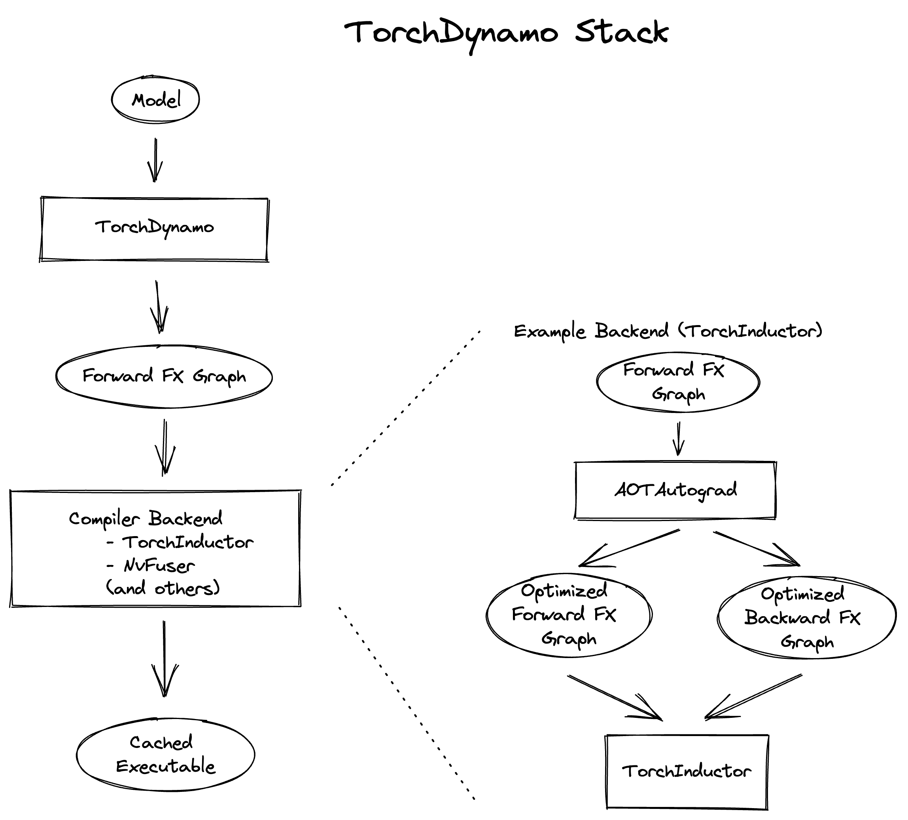

torch.compile 故障排除 ¶
您尝试在 PyTorch 模型中使用 torch.compile 来提升其性能，但它并没有按预期工作。可能性能没有提升，发生了崩溃，或者编译时间过长。本文提供了技巧、解决方案和调试工具，以帮助您克服这些挑战。
目录
设置期望
torch.compile 被设计为一个通用的 PyTorch 编译器。与之前的编译器解决方案 TorchScript 不同， torch.compile 需要更少的代码更改，这意味着模型通常不需要从头开始重写。它还能更优雅地处理不支持的代码 - 不支持的代码会导致失去优化机会而不是崩溃。
在理想的世界里，人们可以简单地应用 torch.compile 到任何 PyTorch 模型，并享受自动加速。然而，在现实中，代码复杂性可能导致以下三种情况之一：
torch.compile运作顺畅，提供加速。需要进行一些代码修改。
torch.compile不会崩溃或花费太多时间，但你可能看不到明显的性能提升。需要对你的代码进行大量修改。
我们预计大部分代码将属于场景（1）和（2）。本文档提供了按参与程度排列的技巧，以帮助解决场景（2）中的代码问题。
编译时间 ¶
即时编译器，因此编译函数的前一两次运行可能会明显较慢。在某些条件下（下文将详细介绍）的重新编译也会使运行速度变慢。各种组件缓存结果以减少未来调用的编译时间，即使在不同的进程中也是如此。冷启动（未缓存）的编译时间通常从几秒到几分钟，对于常见或基准模型。更大的模型可能需要 30 分钟以上到几小时。
术语 §
以下术语与解决 torch.compile 问题相关。
图断点
torch.compile 跟踪您的代码并尝试将您的 PyTorch 代码捕获到单个 PyTorch 操作符（FX 图）的计算图中。然而，这并不总是可能的。当遇到无法跟踪的代码时，会发生“图断裂”。图断裂涉及编译到目前为止已确定的 FX 图，运行不受支持的代码，然后在不受支持的代码之后使用新的 FX 图继续跟踪。由于计算图被分割，我们失去了优化机会，因此模型代码应尽可能避免图断裂。图断裂发生在诸如：
数据依赖的 if 语句
许多 Python 内置函数
C 语言函数
以下是一个由于 Python 内置库中的函数 copy.deepcopy 导致的图断点示例（输出可能有所不同）。
import torch
@torch.compile
def fn(x):
x = x + 1
with open("test.txt", "r") as f:
return x + len(f.read())
fn(torch.ones(3, 3))
$TORCH_LOGS="graph_breaks" python playground.py
Graph break in user code at /data/users/williamwen/pytorch/playground.py:7
Reason: Unsupported: builtin: open [<class 'torch._dynamo.variables.constant.ConstantVariable'>, <class 'torch._dynamo.variables.constant.ConstantVariable'>] False
User code traceback:
File "/data/users/williamwen/pytorch/playground.py", line 7, in fn
with open("test.txt", "r") as f:
Traceback (most recent call last):
File "/data/users/williamwen/pytorch/torch/_dynamo/symbolic_convert.py", line 635, in wrapper
return inner_fn(self, inst)
^^^^^^^^^^^^^^^^^^^^
File "/data/users/williamwen/pytorch/torch/_dynamo/symbolic_convert.py", line 2414, in CALL
self._call(inst)
File "/data/users/williamwen/pytorch/torch/_dynamo/symbolic_convert.py", line 2408, in _call
self.call_function(fn, args, kwargs)
File "/data/users/williamwen/pytorch/torch/_dynamo/symbolic_convert.py", line 962, in call_function
self.push(fn.call_function(self, args, kwargs)) # type: ignore[arg-type]
^^^^^^^^^^^^^^^^^^^^^^^^^^^^^^^^^^^^
File "/data/users/williamwen/pytorch/torch/_dynamo/variables/builtin.py", line 997, in call_function
return handler(tx, args, kwargs)
^^^^^^^^^^^^^^^^^^^^^^^^^
File "/data/users/williamwen/pytorch/torch/_dynamo/variables/builtin.py", line 831, in <lambda>
return lambda *args: unimplemented(error_msg)
^^^^^^^^^^^^^^^^^^^^^^^^
File "/data/users/williamwen/pytorch/torch/_dynamo/exc.py", line 313, in unimplemented
raise Unsupported(msg, case_name=case_name)
torch._dynamo.exc.Unsupported: builtin: open [<class 'torch._dynamo.variables.constant.ConstantVariable'>, <class 'torch._dynamo.variables.constant.ConstantVariable'>] False
守卫
在代码跟踪过程中，我们对运行时值做出一些假设。在跟踪过程中，我们生成“守卫”，这些是针对这些假设的运行时检查。守卫将在编译函数的后续调用中运行，以确定我们是否可以重用先前编译的代码。运行时检查的示例包括常量值、类型和对象 ID。
下面是一个生成的守卫示例。 TENSOR_MATCH 守卫检查输入的类型、设备、dtype、形状等。
import torch
@torch.compile
def fn(x):
return x + 1
fn(torch.ones(3, 3))
$ TORCH_LOGS="guards" python playground.py
GUARDS:
TREE_GUARD_MANAGER:
+- RootGuardManager
| +- DEFAULT_DEVICE: utils_device.CURRENT_DEVICE == None # _dynamo/output_graph.py:471 in init_ambient_guards
| +- GLOBAL_STATE: ___check_global_state()
| +- TORCH_FUNCTION_MODE_STACK: ___check_torch_function_mode_stack()
| +- GuardManager: source=L['x'], accessed_by=DictGetItemGuardAccessor(x)
| | +- TENSOR_MATCH: check_tensor(L['x'], Tensor, DispatchKeySet(CPU, BackendSelect, ADInplaceOrView, AutogradCPU), torch.float32, device=None, requires_grad=False, size=[3, 3], stride=[3, 1]) # return x + 1 # playground.py:6 in fn
| | +- NO_HASATTR: hasattr(L['x'], '_dynamo_dynamic_indices') == False # return x + 1 # playground.py:6 in fn
重新编译
如果守卫在之前编译的每个实例中失败，那么 torch.compile 必须“重新编译”函数，需要再次追踪原始代码。
在下面的示例中，由于检查张量参数形状的守卫失败，需要重新编译。
import torch
@torch.compile
def fn(x):
return x + 1
fn(torch.ones(3, 3))
fn(torch.ones(4, 4))
$ TORCH_LOGS="recompiles" python playground.py
Recompiling function fn in /data/users/williamwen/pytorch/playground.py:3
triggered by the following guard failure(s):
- 0/0: tensor 'L['x']' size mismatch at index 0. expected 3, actual 4
动态形状
torch.compile 最初假设张量形状是静态/常量的，并基于这些假设设置守卫。通过使用“动态形状”，我们可以让 torch.compile 生成可以接受不同形状张量输入的编译代码——我们避免了每次形状不同时都需要重新编译。默认情况下，自动动态形状是启用的 torch.compile(dynamic=None) - 如果由于形状不匹配导致编译失败，将尝试使用动态形状进行重新编译。动态形状也可以完全启用 dynamic=True 或禁用 dynamic=False 。
以下，我们启用动态形状，并指出我们不再需要重新编译。
import torch
@torch.compile(dynamic=True)
def fn(x):
return x + 1
fn(torch.ones(3, 3))
fn(torch.ones(4, 4))
$ TORCH_LOGS="dynamic,recompiles" python playground.py
create_symbol s0 = 3 for L['x'].size()[0] [2, int_oo] at playground.py:5 in fn (_dynamo/variables/builder.py:2718 in <lambda>), for more info run with TORCHDYNAMO_EXTENDED_DEBUG_CREATE_SYMBOL="s0"
produce_guards
produce_guards
想了解更多关于动态形状的信息，请参阅《动态形状手册》。
日志工具 ¶
tlparse / TORCH_TRACE¶
tlparse / TORCH_TRACE 是一对工具，它们生成的编译报告看起来像这样：https://web.mit.edu/~ezyang/Public/bhack-20240609-tlparse/index.html。
跟踪收集非常简单。要收集跟踪，请运行您的重现命令
TORCH_TRACE="/tmp/tracedir" python foo.py
pip install tlparse
tlparse /tmp/tracedir
即使您正在运行分布式作业，此方法也适用，为每个 rank 提供跟踪。它将以与上面生成的类似的 HTML 打开您的浏览器。如果您正在为没有独立重现的复杂问题编写错误报告，您仍然可以通过附加在 /tmp/tracedir 生成的跟踪日志来极大地帮助 PyTorch 开发者。
警告
跟踪日志包含您所有的模型代码。如果您正在处理的模型是敏感的，请不要分享跟踪日志。跟踪日志不包含权重。
tlparse 的输出主要面向 PyTorch 开发者，日志格式便于上传和分享到 GitHub。然而，即使你不是 PyTorch 开发者，仍然可以从中提取有用的信息。我们建议从报告中的内联帮助文本开始，它解释了其内容。以下是一些你可以从 tlparse 中获得的见解：
通过查看堆栈 trie，编译了哪些模型代码？这对于不熟悉正在编译的代码库的人来说特别有用！
有多少个图断开/不同的编译区域？（每个不同的编译都有一个像 [0/0] 这样的颜色编码块）。可能发生图断开的帧是浅绿色 [2/4]。如果有很多帧，那么这是可疑的，表明你可能有一些灾难性的图断开，或者你的代码可能不适合
torch.compile。我重新编译了特定帧多少次？被大量重新编译的内容看起来像：[10/0] [10/1] [10/2] - 如果某物被大量重新编译，那么这是非常可疑的，值得调查，即使它不是你问题的根本原因。
出现了编译错误吗？出现错误的帧将类似于[0/1]。
对于给定的帧，我生成了哪些中间编译产品？例如，你可以查看生成的高级 FX 图或生成的 Triton 代码。
对于特定的帧是否有相关信息？你可以在
compilation_metrics中找到这些信息。
TORCH_LOGS §
您可以使用 TORCH_LOGS 环境变量有选择地启用 torch.compile 栈的部分以记录日志。 TORCH_LOGS 实际上是 tlparse 的日志来源。 TORCH_LOGS 环境变量的格式如下：
TORCH_LOGS="<option1>,<option2>,..." python foo.py
有用的高级选项包括：
graph_breaks：记录用户代码中图断点的位置和图断开的原因guards：记录生成的守卫recompiles: 记录重新编译的函数和失败的守卫，导致重新编译dynamic: 与动态形状相关的日志
此外，您还可以使用 torch._logging.set_logs : 以编程方式设置日志选项
import logging
torch._logging.set_logs(graph_breaks=True)
...
以下详细介绍了更多 TORCH_LOGS 选项。有关选项的完整列表，请参阅 torch._logging 和 torch._logging.set_logs。
tlparse 与 TORCH_LOGS
通常建议首先使用 tlparse 来解决问题。 tlparse 适用于调试大型模型并获取模型编译的高级概述。另一方面， TORCH_LOGS 更适合用于小型示例和细粒度调试细节，当我们已经知道哪个 torch.compile 组件导致问题时。
简单的解决方案
在这里，我们描述了一些涉及少量代码修改或更改一些 torch.compile 设置的 torch.compile 问题的解决方案。
torch.compile 应该应用在哪里？
我们建议将 torch.compile 应用到最高级别的函数上，这个函数不会引起过多问题。通常情况下，这是你的训练或评估步骤，与优化器一起使用，但没有循环，你的顶级 nn.Module 或某些子 nn.Module``s. ``torch.compile 并不适合处理分布式包装模块，如 DDP 或 FSDP，因此请考虑将 torch.compile 应用到传递给包装器的内部模块上。
# inference
model = ...
opt_model = torch.compile(model)
for _ in range(N_ITERS):
inp = ...
out = opt_model(inp)
# training
model = ...
opt = torch.optim.Adam(model.parameters())
@torch.compile
def train(mod, data):
opt.zero_grad(True)
pred = mod(data[0])
loss = torch.nn.CrossEntropyLoss()(pred, data[1])
loss.backward()
opt.step()
for _ in range(N_ITERS):
inp = ...
train(model, inp)
# DistributedDataParallel
model = ...
opt_model = torch.compile(model)
model_ddp = DistributedDataParallel(opt_model, ...)
for _ in range(N_ITERS):
inp = ...
out = model_ddp(inp)
禁用和抑制错误
对于某些模型架构，模型中的一些部分特别难以编译——要么有很多图断开，要么有崩溃。你可能想明确禁用这些有问题的模型部分，以便可以将 torch.compile 应用到可以工作的部分。你可以通过使用 @torch.compiler.disable 装饰器来完成此操作。当 torch.compile 尝试调用禁用的函数时，它会断开图并跳过禁用函数的跟踪，在调用后继续跟踪。默认情况下，从禁用函数发出的所有递归调用也都被禁用。使用 recursive=False 选项允许递归调用进行编译。
def bad1_inner(...):
# skipped
@torch.compiler.disable
def bad1_outer(...):
# skipped
bad1_inner(...)
def bad2_inner(...)
# traced
@torch.compiler.disable(recursive=False)
def bad2_outer(...):
# skipped
bad2_inner(...)
@torch.compile
def fn(...):
# graph break
bad1_outer(...)
...
# graph break
bad2_outer(...)
例如，我们使用 torch.compiler.disable 来在稀疏架构的推荐模型中禁用 torch.compile ，因为稀疏架构难以编译。预处理和日志函数是其他通常会导致大量图断开且编译无价值的函数的例子。
如果你在经历编译器崩溃并且想要继续，你可以设置 torch._dynamo.config.suppress_errors = True 。当编译器崩溃时，我们将只是跳过跟踪函数，稍后再尝试。这不是最佳实践——最好是最终手动添加禁用注释。
解决图断开问题
为了最大化优化机会，减少图断开的数量非常重要。回想一下，你可以使用 tlparse 或 TORCH_LOGS="graph_breaks" 来查看正在发生的图断开。一般来说，图断开是由以下原因之一引起的：
你试图做的是一种本质上无法追踪的事情，例如数据依赖的控制流。
你正在尝试做的是目前还不支持的事情。例如，我们目前对使用内置 Python
inspect模块的代码追踪支持有限。你的代码中存在错误。例如，你可能尝试用一个错误的参数数量调用一个函数。
图断开日志会告诉你用户代码的位置和图断开的原因。不幸的是，许多图断开在没有对 Dynamo 有更深入理解的情况下是不可操作的。甚至可能很难确定导致你的图断开的三个原因中哪个是真正的原因。我们正在努力使图断开消息更具可操作性。
此外，丢失优化机会的影响在不同图断点之间也有所不同。例如，发生在模型 forward 中间的图断点可能比发生在 forward 预处理部分开始的图断点有更大的负面影响。因此，并不是每个断点都需要防止，而是应该防止那些造成性能显著下降的断点。
如果图断点消息没有建议任何操作，你怀疑图断点的原因是（2），并且你认为图断点正在造成性能下降，那么请将图断点报告为一个问题。如果一个函数有很多图断点，考虑禁用该函数的编译，因为图断点的开销可能会变得难以承受。
以下是一些常见的图断点和一些解决方案。
数据相关操作 ¶
图在数据相关操作上会中断，例如数据相关的控制流（if 语句、张量循环）和直接张量数据访问（ .item ， .data_ptr ）。
import torch
@torch.compile
def fn(x):
y = x.sum()
if y > 0:
return x + y.item()
return x - y.item()
fn(torch.ones(3, 3))
$ TORCH_LOGS="graph_breaks" python playground.py
Graph break in user code at /data/users/williamwen/pytorch/playground.py:6
Reason: Data-dependent jump
User code traceback:
File "/data/users/williamwen/pytorch/playground.py", line 6, in fn
if y > 0:
Graph break in user code at /data/users/williamwen/pytorch/playground.py:7
Reason: Unsupported: Tensor.item
User code traceback:
File "/data/users/williamwen/pytorch/playground.py", line 7, in torch_dynamo_resume_in_fn_at_6
return x + y.item()
Traceback (most recent call last):
File "/data/users/williamwen/pytorch/torch/_dynamo/symbolic_convert.py", line 616, in wrapper
return inner_fn(self, inst)
^^^^^^^^^^^^^^^^^^^^
File "/data/users/williamwen/pytorch/torch/_dynamo/symbolic_convert.py", line 2288, in CALL
self._call(inst)
File "/data/users/williamwen/pytorch/torch/_dynamo/symbolic_convert.py", line 2282, in _call
self.call_function(fn, args, kwargs)
File "/data/users/williamwen/pytorch/torch/_dynamo/symbolic_convert.py", line 838, in call_function
self.push(fn.call_function(self, args, kwargs)) # type: ignore[arg-type]
^^^^^^^^^^^^^^^^^^^^^^^^^^^^^^^^^^^^
File "/data/users/williamwen/pytorch/torch/_dynamo/variables/misc.py", line 1038, in call_function
return self.obj.call_method(tx, self.name, args, kwargs)
^^^^^^^^^^^^^^^^^^^^^^^^^^^^^^^^^^^^^^^^^^^^^^^^^
File "/data/users/williamwen/pytorch/torch/_dynamo/variables/tensor.py", line 527, in call_method
result = handler_method(*args, **kwargs)
^^^^^^^^^^^^^^^^^^^^^^^^^^^^^^^
File "/data/users/williamwen/pytorch/torch/_dynamo/variables/tensor.py", line 773, in method_item
unimplemented("Tensor.item")
File "/data/users/williamwen/pytorch/torch/_dynamo/exc.py", line 304, in unimplemented
raise Unsupported(msg, case_name=case_name)
torch._dynamo.exc.Unsupported: Tensor.item
对于这些图中断的一般解决方案是避免执行数据相关操作。一些具体的解决方案包括：
如果您的控制流实际上不依赖于数据值，请考虑修改您的代码以在常量上执行控制流。
# old
x = torch.randn(3, 3)
@torch.compile
def fn(y):
if x.sum() > 0:
return y + x
else:
return y - x
# new
x = torch.randn(3, 3)
cond = (x.sum() > 0).item()
@torch.compile
def fn(y):
if cond:
return y + x
else:
return y - x
使用高级操作符如
torch.cond（https://pytorch.org/docs/main/cond.html）来替代数据相关的控制流
# old
@torch.compile
def fn(x):
if x.sum() > 0:
return x + 1
return x - 1
# new
@torch.compile
def fn(x):
return torch.cond(
x.sum() > 0,
lambda x: x + 1,
lambda x: x - 1,
(x,),
)
如果你有
.item()调用，尝试torch._dynamo.config.capture_scalar_outputs = True或TORCHDYNAMO_CAPTURE_SCALAR_OUTPUTS=1将函数中的问题部分包裹在自定义操作符中
自定义操作符 ¶
如果你有的代码 torch.compile 难以追踪，无论是由于缺少支持还是基本不兼容，你可以考虑将问题代码包裹在自定义操作符中。
自定义操作需要一点额外的工作才能使其与 torch.compile 兼容。有关更多详细信息，请参阅 https://pytorch.org/tutorials/advanced/custom_ops_landing_page.html。
打印¶
打印/记录/发出警告会导致图断开。如果您有一个执行许多记录调用的函数，例如记录训练迭代数据的函数，请考虑在它上面应用 torch.compiler.disable 。
或者，您可以尝试使用 torch._dynamo.config.reorderable_logging_functions 。此配置用于重新排序记录函数，以便在跟踪函数的末尾调用它们，从而避免图断开。但是，如果发生突变等，记录的内容可能会有所不同。
import torch
torch._dynamo.config.reorderable_logging_functions.add(print)
@torch.compile
def fn(x):
x += 1
print("log!")
return torch.sin(x)
fn(torch.ones(3, 3))
$ TORCH_LOGS="graph_breaks" python playground.py
log!
代码错误
您的代码可能错误，或者遇到了来自外部 torch.compile 的错误。在下面的代码中，我们在 torch.sin 调用中犯了一个拼写错误，多提供了一个参数。
import torch
@torch.compile
def fn(x):
y = torch.sin(x, x)
return y
fn(torch.ones(3, 3))
$ TORCH_LOGS="graph_breaks" python playground.py
Graph break in user code at /data/users/williamwen/pytorch/playground.py:5
Reason: Unsupported: TypeError <built-in method sin of type object at 0x7fd6fd764600>: sin() takes 1 positional argument but 2 were given
User code traceback:
File "/data/users/williamwen/pytorch/playground.py", line 5, in fn
y = torch.sin(x, x)
...
从日志中很难判断错误是由您的代码引起的，还是因为 torch.compile 的 bug。为了区分，我们建议尝试在不使用 torch.compile 的情况下运行您的代码，看是否仍然出现错误。
处理重新编译
您可以使用 tlparse 或 TORCH_LOGS=recompiles 查看重编译及其原因。
动态形状已启用吗？¶
由于形状不匹配而导致的重编译形式如下：
tensor 'L['x']' size mismatch at index 0. expected 3, actual 4
确保不要将 torch.compile 的 dynamic 选项设置为 False 。默认选项 dynamic=None 将仅在第一次编译后尝试动态形状。您可以将 dynamic=True 设置为尽可能提前编译为动态形状。
关于动态形状的更多信息，请参阅《动态形状手册》。
修改缓存大小限制 ¶
函数可以被重新编译的次数有限，由 torch._dynamo.config.recompile_limit 和 torch._dynamo.config.accumulated_recompile_limit 决定。如果任一限制被超过，则我们不会再次尝试编译该函数，而是会立即执行该函数。 torch.compile 还会发出警告，包含受影响的函数和达到的限制。在下面的示例中，每次函数调用都会尝试重新编译。当我们达到缓存大小限制（8）时，我们将停止尝试重新编译。
import torch
@torch.compile(dynamic=False)
def fn(x):
return x + 1
for i in range(1, 10):
fn(torch.ones(i))
$ python playground.py
torch._dynamo hit config.recompile_limit (8)
function: 'fn' (/data/users/williamwen/pytorch/playground.py:5)
last reason: 0/0: tensor 'L['x']' size mismatch at index 0. expected 1, actual 9
如果你知道重新编译的次数有一个合理的常数上限，你可以提高缓存大小限制。如果重新编译的成本超过了编译的收益，那么你可以考虑降低缓存大小限制。
将常量用张量包装 ¶
默认情况下， int / float 变量被视为常量并受到保护。在下面的示例中，每次函数调用都会进行重新编译。
import torch
@torch.compile
def fn(x, c):
return x + c
for i in range(1, 10):
fn(torch.ones(i), 0.5 + i)
$ TORCH_LOGS="recompiles" python playground.py
Recompiling function fn in /data/users/williamwen/pytorch/playground.py:3
triggered by the following guard failure(s):
- 0/7: L['c'] == 8.5
- 0/6: L['c'] == 7.5
- 0/5: L['c'] == 6.5
- 0/4: L['c'] == 5.5
- 0/3: L['c'] == 4.5
- 0/2: L['c'] == 3.5
- 0/1: L['c'] == 2.5
- 0/0: L['c'] == 1.5
torch._dynamo hit config.recompile_limit (8)
function: 'fn' (/data/users/williamwen/pytorch/playground.py:3)
last reason: 0/0: L['c'] == 1.5
尤其对于 LR 调度器，使用常量初始化可能会导致重新编译：
import torch
mod = torch.nn.Linear(3, 3)
opt = torch.optim.Adam(mod.parameters(), lr=0.01)
sched = torch.optim.lr_scheduler.ExponentialLR(opt, 0.9)
@torch.compile
def fn(inp):
opt.zero_grad(True)
out = mod(inp).sum()
out.backward()
opt.step()
sched.step()
for i in range(1, 10):
fn(torch.ones(3, 3))
$ TORCH_LOGS="recompiles" python playground.py
Recompiling function step in /data/users/williamwen/pytorch/torch/optim/adam.py:189
triggered by the following guard failure(s):
- 3/7: L['self'].param_groups[0]['lr'] == 0.004782969000000002
- 3/6: L['self'].param_groups[0]['lr'] == 0.005314410000000002
- 3/5: L['self'].param_groups[0]['lr'] == 0.005904900000000002
- 3/4: L['self'].param_groups[0]['lr'] == 0.006561000000000002
- 3/3: L['self'].param_groups[0]['lr'] == 0.007290000000000001
- 3/2: L['self'].param_groups[0]['lr'] == 0.008100000000000001
- 3/1: L['self'].param_groups[0]['lr'] == 0.009000000000000001
- 3/0: L['self'].param_groups[0]['lr'] == 0.01
torch._dynamo hit config.recompile_limit (8)
function: 'step' (/data/users/williamwen/pytorch/torch/optim/adam.py:189)
last reason: 3/0: L['self'].param_groups[0]['lr'] == 0.01
在这两个示例中，我们可以将浮点变量包装在张量中，以防止重新编译。
# first example
for i in range(1, 10):
fn(torch.ones(i), torch.tensor(0.5 + i))
# second example
opt = torch.optim.Adam(mod.parameters(), lr=torch.tensor(0.01))
sched = torch.optim.lr_scheduler.ExponentialLR(opt, torch.tensor(0.9))
报告问题
如果上述解决方案不足以使 torch.compile 工作正常，那么您应该考虑向 PyTorch 报告问题。但在我们生活中，还有一些事情可以让我们更容易地处理。
消融
使用 backend= 选项检查 torch.compile 栈中哪个组件导致问题。特别是尝试：
仅运行 TorchDynamo，即
torch.compile的图捕获组件。运行 TorchDynamo 和 AOTAutograd，编译期间额外生成反向图。
运行 TorchDynamo 和 AOTAutograd，并带有算子分解/分区。
运行 TorchDynamo、AOTAutograd 和 TorchInductor，即生成编译内核的后端 ML 编译器。
如果你只使用电感器后端失败，你可以额外测试各种电感器模式：
torch.compile(fn, backend="inductor", mode="default")torch.compile(fn, backend="inductor", mode="reduce-overhead")torch.compile(fn, backend="inductor", mode="max-autotune")
你还可以检查动态形状是否会导致任何后端出现问题：
torch.compile(fn, dynamic=True)（始终使用动态形状）torch.compile(fn, dynamic=False)（永不使用动态形状）torch.compile(fn, dynamic=None)(自动动态形状)
二分法
你尝试过最新的夜间版本吗？过去能工作但现在不再工作了吗？你能通过二分法来确定问题首次出现的夜间版本吗？二分法对于性能、准确性或编译时间回归尤其有帮助，在这些情况下，问题起源并不明显。
创建重现程序
创建复现器是一项繁重的工作，如果您没有时间做这件事，那完全没问题。然而，如果您是一个对 torch.compile 内部不熟悉的积极用户，创建一个独立的复现器可以对我们修复 bug 的能力产生巨大影响。如果没有复现器，您的 bug 报告必须包含足够的信息，以便我们能够识别问题的根本原因并从头开始编写复现器。
以下是一些有用的复现器列表，按优先级从高到低排序：
自包含的小型复现器：一个没有外部依赖的脚本，代码行数不超过 100 行，运行时可以复现问题。
自包含的大型复现器：即使它很大，自包含也是一个巨大的优势！
非自包含的复现器，具有可管理的依赖关系：例如，如果您可以通过运行脚本在
pip install transformers之后复现问题，那么这是可管理的。我们很可能运行它并调查。需要大量设置的不可包含的复现器：这可能涉及下载数据集、多个环境设置步骤或需要 Docker 镜像的特定系统库版本。设置越复杂，我们复现环境就越困难。
注意
Docker 简化了设置，但使环境更改变得复杂，因此它不是完美的解决方案，尽管必要时我们会使用它。
在某种程度上，单进程可运行的复现器比需要多进程训练的复现器更好（但再次强调，如果您只有多进程复现器，我们也会接受！）
此外，以下是一个非详尽的列表，您可以在问题中检查的方面，并尝试在您的复现器中尝试复现：
自动微分。您是否有带有
requires_grad=True的张量输入？您是否在输出上调用backward()？动态形状。您是否设置了
dynamic=True？或者您是否多次运行测试代码，形状各不相同？自定义算子。在真实工作流程中是否涉及自定义算子？您能否使用 Python 自定义算子 API 复现其中一些重要特性？
配置。你是否设置了所有相同的配置？这包括
torch._dynamo.config和torch._inductor.config设置，以及torch.compile的参数，如backend/mode。上下文管理器。你是否复制了任何活动上下文管理器？这可能包括
torch.no_grad，自动混合精度，TorchFunctionMode/TorchDispatchMode，激活检查点，编译自动微分等。张量子类。是否涉及张量子类？
压缩器 ¶
压缩器是一种早期工具，它给定一个在尝试运行或编译时崩溃的 FX 图，找到也崩溃的子图，并输出执行该子图操作的代码。本质上，压缩器找到了一类与 torch.compile -相关崩溃的最小化复现。这假设我们已经能够成功追踪代码。
不幸的是，现在大多数时候，压缩器不能按预期工作，可能需要其他方法。这很可能是由于可以通过这种方式自动复现的 bug 通常更容易修复，并且已经得到解决，留下了不易复现的更复杂问题。然而，尝试使用压缩器很简单，所以即使可能不成功，也值得一试。
压缩器操作说明可在此处找到。如果编译器崩溃，您可以设置 TORCHDYNAMO_REPRO_AFTER="dynamo" 或 TORCHDYNAMO_REPRO_AFTER="aot" 。 aot 选项更有可能成功，尽管它可能无法识别 AOTAutograd 问题。这将生成 repro.py 文件，可能有助于诊断问题。对于与准确性相关的问题，请考虑设置 TORCHDYNAMO_REPRO_LEVEL=4 。请注意，这并不总是能成功识别出问题子图。
深入调试
本节提供了独立调试 torch.compile 问题或深入了解 torch.compile 堆栈的工具和技术。这些方法比上面介绍的方法更复杂，并且是 PyTorch 开发者经常用来调试真实 torch.compile 问题的方法。
下面是堆栈的高级概述：
栈由三个主要组件组成：TorchDynamo、AOTAutograd 和 Inductor。我们的调试策略是首先确定错误发生的组件，然后分别调试该组件。要确定导致问题的组件，请参阅上述“报告问题”部分下的消融部分。有关调试特定组件的指导，请参阅下面的章节。
TorchDynamo¶
记录 Dynamo 正在追踪的内容 ¶
TORCH_LOGS=trace_bytecode 选项允许您查看 Dynamo 正在追踪的确切字节码指令，以及 Python 解释器堆栈的符号表示。在遇到图断开或崩溃时，建议检查最后追踪的几个字节码指令。
您还可以使用 TORCH_LOGS=trace_source 来查看 Dynamo 跟踪的源代码的哪些行。这在与 trace_bytecode 结合使用时非常有用，可以查看每个跟踪的字节码指令对应的源代码行。
最后，您可以使用 TORCH_LOGS=graph_code 来查看 Dynamo 跟踪的 FX 图表示的 Python 代码。您可以查看此代码以确认是否正确跟踪了操作。
import torch
def g(x, y):
return x + y
@torch.compile(backend="eager")
def f(x):
x = torch.sin(x)
x = g(x, x)
return x
f(torch.ones(3, 3))
$ TORCH_LOGS="trace_bytecode,trace_source,graph_code" python playground.py
TRACE starts_line /data/users/williamwen/pytorch/playground.py:6 in f ()
@torch.compile(backend="eager")
TRACE RESUME 0 []
TRACE starts_line /data/users/williamwen/pytorch/playground.py:8 in f (f)
x = torch.sin(x)
TRACE LOAD_GLOBAL torch []
TRACE LOAD_ATTR sin [NullVariable(), PythonModuleVariable(<module 'torch' from '/data/users/williamwen/pytorch/torch/__init__.py'>)]
TRACE LOAD_FAST x [NullVariable(), TorchInGraphFunctionVariable(<built-in method sin of type object at 0x7f00f6964600>)]
TRACE CALL 1 [NullVariable(), TorchInGraphFunctionVariable(<built-in method sin of type object at 0x7f00f6964600>), LazyVariableTracker()]
TRACE STORE_FAST x [TensorVariable()]
TRACE starts_line /data/users/williamwen/pytorch/playground.py:9 in f (f)
x = g(x, x)
TRACE LOAD_GLOBAL g []
TRACE LOAD_FAST x [NullVariable(), UserFunctionVariable()]
TRACE LOAD_FAST x [NullVariable(), UserFunctionVariable(), TensorVariable()]
TRACE CALL 2 [NullVariable(), UserFunctionVariable(), TensorVariable(), TensorVariable()]
TRACE starts_line /data/users/williamwen/pytorch/playground.py:3 in g (g) (inline depth: 1)
def g(x, y):
TRACE RESUME 0 []
TRACE starts_line /data/users/williamwen/pytorch/playground.py:4 in g (g) (inline depth: 1)
return x + y
TRACE LOAD_FAST x []
TRACE LOAD_FAST y [TensorVariable()]
TRACE BINARY_OP 0 [TensorVariable(), TensorVariable()]
TRACE RETURN_VALUE None [TensorVariable()]
TRACE STORE_FAST x [TensorVariable()]
TRACE starts_line /data/users/williamwen/pytorch/playground.py:10 in f (f)
return x
TRACE LOAD_FAST x []
TRACE RETURN_VALUE None [TensorVariable()]
TRACED GRAPH
===== __compiled_fn_1 =====
/data/users/williamwen/pytorch/torch/fx/_lazy_graph_module.py class GraphModule(torch.nn.Module):
def forward(self, L_x_: "f32[3, 3][3, 1]cpu"):
l_x_ = L_x_
# File: /data/users/williamwen/pytorch/playground.py:8 in f, code: x = torch.sin(x)
x: "f32[3, 3][3, 1]cpu" = torch.sin(l_x_); l_x_ = None
# File: /data/users/williamwen/pytorch/playground.py:4 in g, code: return x + y
x_1: "f32[3, 3][3, 1]cpu" = x + x; x = None
return (x_1,)
Dynamo 跟踪断点设置
在 Dynamo/用户代码中设置断点有时有助于查看跟踪用户代码时 Dynamo 的状态。不幸的是，以常规 Python 方式设置断点会导致 TorchDynamo 中的图断开，因此我们无法在预期的断点位置查看 Dynamo 的状态。
设置断点的第一种方法是在 Dynamo 源代码中插入。推荐放置断点的三个位置是：
在
torch/_dynamo/symbolic_convert.py处设置断点，针对名称与问题字节码指令相同的函数，例如def CALL_FUNCTION和def STORE_ATTR。您可以根据输入条件设置断点，例如指令的argval或栈顶对象的名称，因为某些字节码操作码被频繁使用。在图形断点或错误起源处设置断点。通常，图形断点是从对
unimplemented(...)的调用中发出的。在
torch/_dynamo/variables/builder.py, function:_wrap处设置断点。您可能需要根据输入条件设置断点。此函数确定如何符号化表示给定值。如果您怀疑值表示不正确，请在此处设置断点。
在第二种方式中，可以通过使用 torch._dynamo.comptime.comptime.breakpoint :来插入断点
from torch._dynamo.comptime import comptime
@torch.compile
def f(...):
...
comptime.breakpoint()
...
编译时断点非常方便，因为它允许你在被跟踪的用户代码中的特定位置检查 Dynamo 的状态。它不需要你在 Dynamo 源代码中插入断点，也不需要根据变量条件性地设置断点。
当编译时断点被触发时，你可以执行以下操作：
ctx.print_bt()用于打印用户堆栈跟踪ctx.print_locals()打印所有当前局部变量ctx.print_graph()打印当前追踪的图ctx.disas()打印当前追踪函数的字节码使用标准
pdb命令，例如bt/u/d/n/s/r，- 你可以向上pdb栈移动以检查更多 Dynamo 内部功能
import torch
from torch._dynamo.comptime import comptime
@torch.compile(backend="eager")
def f(x):
y = x + 1
comptime.breakpoint()
y = y + 1
return y
f(torch.ones(3, 3))
$ python playground.py
--Return--
> /data/users/williamwen/pytorch/torch/_dynamo/comptime.py(392)inner()->None
-> builtins.breakpoint()
(Pdb) ctx.print_bt()
File "/data/users/williamwen/pytorch/playground.py", line 7, in f
comptime.breakpoint()
(Pdb) ctx.print_locals()
x = FakeTensor(..., size=(3, 3))
y = FakeTensor(..., size=(3, 3))
(Pdb) bt
...
/data/users/williamwen/pytorch/torch/_dynamo/symbolic_convert.py(826)call_function()
-> self.push(fn.call_function(self, args, kwargs)) # type: ignore[arg-type]
/data/users/williamwen/pytorch/torch/_dynamo/variables/misc.py(331)call_function()
-> func(ComptimeContext(tx))
> /data/users/williamwen/pytorch/torch/_dynamo/comptime.py(392)inner()->None
-> builtins.breakpoint()
(Pdb) ctx.print_graph()
def forward(self, L_x_: "f32[3, 3]"):
l_x_ = L_x_
# File: /data/users/williamwen/pytorch/playground.py:6 in f, code: y = x + 1
y: "f32[3, 3]" = l_x_ + 1; l_x_ = y = None
字节码生成错误 ¶
虽然不常见，但 Dynamo 可能会生成错误的字节码。这可能发生在你确定以下情况时：
消融实验表明错误发生在 TorchDynamo 级别
错误并非来自 TorchDynamo 的堆栈帧
错误看起来更像是用户错误，而不是 Dynamo 错误，或者是一个段错误
在没有
torch.compile的情况下不会出现错误
字节码生成错误通常很难修复，我们建议提交问题而不是自己尝试修复。如果您想查看 Dynamo 生成的字节码，可以使用 TORCH_LOGS=bytecode 。您可以在这里查看 Dynamo 生成的字节码的高级概述。
AOTAutograd¶
AOTAutograd 错误通常很难调试 - 我们建议直接提交问题。AOTAutograd 的日志输出主要有助于查看 Inductor 的输入。
TORCH_LOGS 选项摘要
有用的 TORCH_LOGS 选项摘要如下：
选项 |
描述 |
|---|---|
全部 |
从所有 |
+dynamo |
从 TorchDynamo 输出调试日志 |
+aot |
从 AOTAutograd 输出调试日志 |
+inductor |
从 TorchInductor 输出调试日志 |
动态 |
输出动态形状的日志 |
图形代码 |
输出 Dynamo 生成的 FX 图的 Python 代码 |
图大小 |
输出 Dynamo 生成的 FX 图张量的尺寸 |
trace_bytecode |
输出 Dynamo 正在跟踪的字节码指令以及 Dynamo 跟踪的符号解释器堆栈 |
跟踪源 |
输出 Dynamo 当前正在跟踪的原始源代码的行 |
字节码 |
输出 Dynamo 生成的字节码 |
守卫 |
生成输出守卫 |
重新编译 |
输出重新编译原因（仅失败的第一个守卫检查） |
重新编译详细 |
输出在重新编译时失败的守卫检查 |
aot_graphs |
输出由 AOTAutograd 生成的图 |
AOT 联合图 |
输出由 AOTAutograd 生成的联合前向-后向图 |
输出代码 |
输出 Inductor 生成的代码 |
内核代码 |
每个内核由 Inductor 生成的输出代码 |
调度 |
输出 Inductor 调度日志 |
性能提示 |
输出电感性能提示日志 |
融合 |
输出电感融合日志 |
查看完整选项列表，请参阅 torch._logging 和 torch._logging.set_logs。